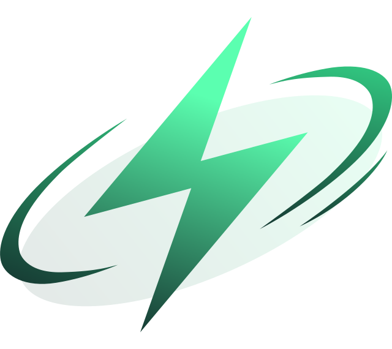

LOTOS
Фундамент, который помогает фильтровать рынок и отделять шум от более понятных возможностей.

SGX — токен ранней фазы экосистемы Signal. Сейчас цена текущего этапа — $5,05, и этот этап может быть самым важным для тех, кто хочет войти до следующих фаз.
Идея простая: чем раньше человек понимает механику SGX и получает доступ, тем раньше он входит в текущую фазу экосистемы.
Сейчас главный смысл простой: SGX уже находится в активной фазе движения, но экосистема ещё не получила массового внимания. Вход позже может быть уже по другим условиям.
Обычному человеку сложно вовремя понять, где шум, а где реальная экосистема. Из-за этого многие заходят слишком поздно.
Signal нужен, чтобы обычный человек мог проще понять SGX, увидеть текущую фазу и получить доступ без сложных терминалов.
LOTOS.IO — технологический фундамент экосистемы. Он помогает отбирать и анализировать токены. Signal делает всё проще для обычного человека: показывает понятный вход в экосистему и текущую фазу SGX.
Главная идея простая: не заставлять человека разбираться в сложных терминалах, а показать ему, где сейчас находится SGX и как получить доступ к ранней фазе.
Фундамент, который помогает фильтровать рынок и отделять шум от более понятных возможностей.
Простое приложение, которое объясняет экосистему обычному человеку без сложных терминов.
Токен ранней фазы, связанный с запуском и развитием экосистемы Signal.
Способ активировать доступ к Signal и текущей фазе SGX.
Помогает разобраться, что происходит, простым языком.
Смысл текущей фазы — войти до того, как проект получит больше внимания.
Без сложных слов: человек активирует лицензию, получает вход в Signal и может участвовать в текущей фазе SGX.
Активация открывает вход в экосистему SIGNAL.
Пользователь получает доступ к информации, обучению и интерфейсу экосистемы.
Signal объясняет текущий этап SGX простыми словами.
Человек видит текущую динамику и понимает, что следующие этапы могут быть менее доступными.
После доступа пользователь может следить за развитием экосистемы и текущей фазой SGX.
Главная идея — понять SGX до того, как о нём узнает более широкая аудитория.
SGX нужен для запуска и развития экосистемы. Сейчас внимание к проекту ещё формируется, поэтому текущий этап важен для тех, кто хочет войти раньше следующих фаз.
Текущая цена SGX — $5,05, но экосистема всё ещё находится на раннем этапе.
Чтобы получить доступ к текущей фазе SGX, пользователь активирует лицензию Signal.
Signal объясняет SGX проще, чтобы человек не терялся в сложных крипто-терминах.
Проект находится на этапе активного формирования сообщества и инфраструктуры.
Если экосистема продолжит развиваться, вход позже может быть уже по другим условиям.
Развитие экосистемы усиливает внутреннее взаимодействие пользователей.
Платформа объясняет механику работы экосистемы и текущую фазу её развития.
Чтобы войти в текущую фазу SGX, пользователь активирует лицензию Signal. После этого открывается доступ к экосистеме, информации, обучению и интерфейсу Signal.
Первый шаг для доступа к Signal и текущей фазе SGX.
Открывается доступ к функциям платформы и интерфейсу приложения.
Главная цель — войти в текущую фазу до следующих этапов развития.
Текущая цена SGX — $5,05. Если ты хочешь войти в текущую фазу, начни с активации доступа к Signal.
Эта страница скрыта от обычных посетителей. После сохранения изменения увидят все, кто откроет сайт.
Введите пароль, чтобы менять тексты, цену SGX, даты и кнопки.